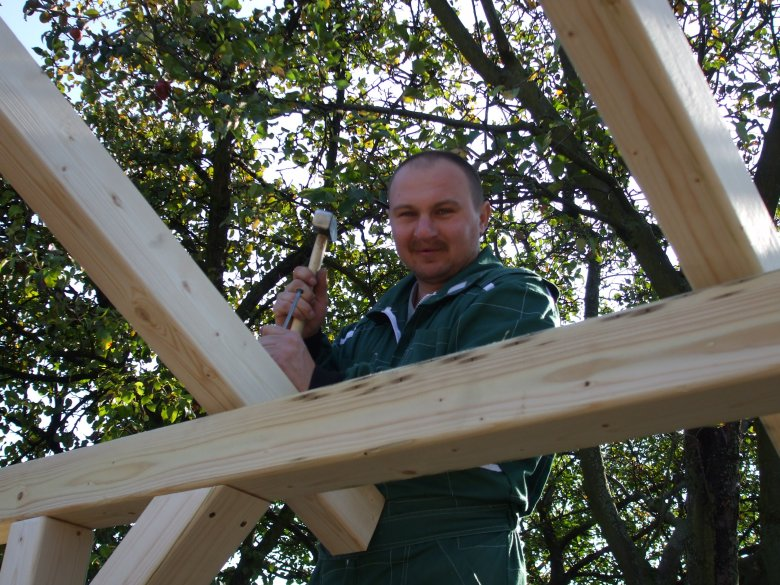

Naša spoločnosť sa zaoberá tradičnou stolárskou výrobou. Vyrábame nábytok a bytové doplnky na zákazku podľa rozmerov zákazníka. Ako vstupný materiál používame len certifikované materiály slovenských a českých výrobcov a predajcov. Na slovenskom trhu sa pohybujeme už skoro 20 rokov. Zaoberáme sa výrobou nábytku a bytových doplnkov na zákazku podla návrhov a rozmerov zákazníka.
Taktiež sa zaoberáme aj typickou stolárskou výrobou. Ako vstupný materiál používame len certifikované materiály slovenských a českých výrobcov a predajcov. Sídlo firmy a taktiež aj prevádzka sa nachádza v Novej Dubnici v časti Veľký Kolačín, Slobody 63.
Kontaktovať nás